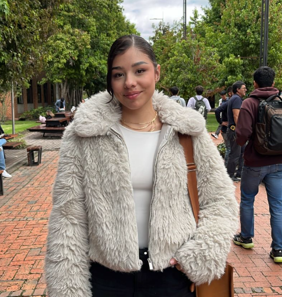
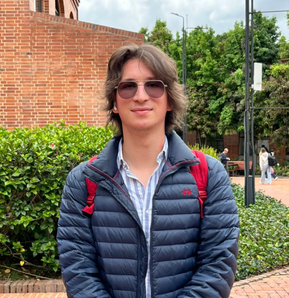
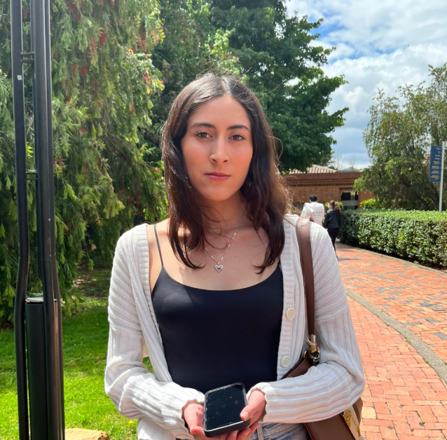
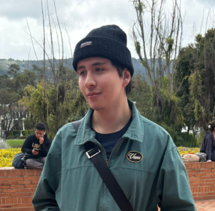
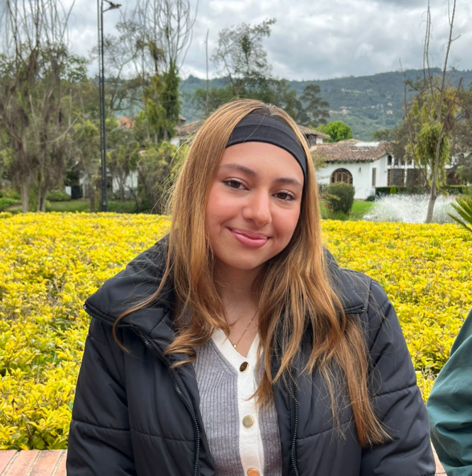

Reunimos voces estudiantiles para entender qué se pierde entre semestres
y cómo transformarlo en aprendizaje sostenible.
Historia 1 — Ana (Ing. Informática, 1°)
Lo que contó: “Al final del día lo que ocurre en clase se queda en clase.”
Ana explicó que
guarda partes de trabajos, pero sin orden ni contexto (qué funcionó, qué no y por qué).
Qué le pasa entre semestres: cuando inicia materias nuevas, siente que no
puede apoyarse en
lo ya visto porque no tiene una ruta clara de consulta.
Qué necesitaría: ejemplos previos con explicación corta del proceso y
errores comunes para
anticipar retos.
Aprendizaje: no basta con “guardar archivos”; hace falta guardar también
decisiones y
aprendizajes clave.
Historia 2 — Eduardo (Ing. Industrial, 5°)
Lo que contó: “Termino la materia y nunca vuelvo a abrir esos archivos.”
Comentó que, por
carga académica, prioriza entregar y pasar, no documentar.
Qué le pasa entre semestres: cuando necesita retomar herramientas o modelos,
debe reaprender
pasos básicos y eso le retrasa proyectos más avanzados.
Qué necesitaría: un repositorio por materia con entregables, plantillas y
notas breves de
uso.
Aprendizaje: la falta de continuidad genera repetición de errores y pérdida
de tiempo en
tareas que ya se habían resuelto.
Historia 3 — Valentina (Psicología, 4°)
Lo que contó: “Cada profesor empieza como si uno no supiera nada.” Para
ella, no ver
referentes previos dificulta entender expectativas y enfoques de trabajo.
Qué le pasa entre semestres: inicia con incertidumbre sobre formatos,
profundidad esperada y
criterios prácticos.
Qué necesitaría: acceso a trabajos anteriores (anonimizados) con rúbrica o
comentario de
valor.
Aprendizaje: las historias y ejemplos reales reducen ansiedad y mejoran la
preparación desde
el inicio del semestre.
Historia 4 — Juan David (Administración, 7°)
Lo que contó: “Son trabajos útiles, pero se quedan en la nota.” Señaló que
muchos insumos
valiosos no se vuelven a consultar porque quedan aislados.
Qué le pasa entre semestres: en cursos de continuidad no logra reutilizar
análisis previos
ni comparar decisiones con evidencia organizada.
Qué necesitaría: histórico trazable por tema y semestre (fuentes, supuestos
y conclusiones).
Aprendizaje: cuando solo se conserva el entregable final, se pierde el
razonamiento que más
aporta al aprendizaje futuro.
Historia 5 — Laura (Derecho, 3°)
Lo que contó: “Uno estudia muchísimo para el parcial, pero luego se olvida.”
Dijo que
concentra esfuerzo en evaluaciones y después no mantiene un sistema de consulta.
Qué le pasa entre semestres: al necesitar fundamentos ya vistos, no ubica
rápido los
materiales y vuelve a estudiar desde cero.
Qué necesitaría: organización simple por curso (temas, casos, apuntes y
palabras clave).
Aprendizaje: el problema no es falta de esfuerzo; es falta de estructura
para conservar y
recuperar conocimiento.

Entrevista 1
Ana, 22 · Ingeniería Informática
(1°)
Describe que al terminar el semestre lo aprendido
se queda en el salón y que le gustaría conocer experiencias previas para anticipar nuevos
retos.
“Al final del día lo que ocurre en clase se queda
en clase.”

Entrevista 2
Eduardo, 21 · Ingeniería Industrial
(5°)
Reconoce que los proyectos aplicados se archivan y
se olvidan, lo que lo obliga a reaprender herramientas y repetir errores.
“Termino la materia y nunca vuelvo a abrir esos
archivos.”

Entrevista 3
Valentina, 20 · Psicología (4°)
Percibe que cada semestre inicia desde cero y que
los ejemplos previos ayudarían a entender expectativas y metodologías.
“Cada profesor empieza como si uno no supiera
nada.”

Entrevista 4
Juan David, 23 · Administración
(7°)
Explica que los análisis financieros valiosos no
trascienden y que pocos documentan porque creen que nadie los consultará.
“Son trabajos útiles, pero se quedan en la nota.”

Entrevista 5
Laura, 19 · Derecho (3°)
Afirma que el aprendizaje es momentáneo y que al
siguiente semestre los detalles se diluyen con rapidez.
“Uno estudia muchísimo para el parcial, pero luego
se olvida.”